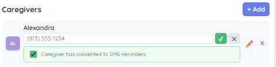

Sunday Care Schedule · operated by xlSigma, LLC · Last updated: June 10, 2026
This Privacy Policy explains how the Sunday Care Schedule application ("the App") collects and uses information. The App is a private scheduling tool used by one family to coordinate eldercare shifts and is not offered to the general public.
The App stores the first names and mobile phone numbers of the family caregivers who participate in the schedule. This information is entered manually by the family organizer; there is no public sign-up form. We do not collect location data, payment information, or any other personal data.
Phone numbers are used for one purpose only: to send SMS text reminders to a caregiver about their assigned Sunday care shift. Names are used to personalize those reminders and to display the schedule within the App.
Before any caregiver's phone number is saved in the App, the family organizer must check a consent box that reads:
"I confirm this caregiver has consented to receive SMS shift reminders from this number. Msg & Data rates may apply. Reply STOP to opt out."
This confirmation must be checked when adding a new caregiver and when updating an existing phone number. The consent status is stored in the database alongside the caregiver's record. No reminder SMS will be sent without this consent step having been completed. The screenshot below shows the consent checkbox as it appears in the caregiver management interface:

Phone numbers are transmitted to our SMS delivery provider (Twilio) solely to deliver the reminder messages described above. We do not sell, rent, or trade personal information. No mobile information will be shared with third parties or affiliates for marketing or promotional purposes. Text messaging originator opt-in data and consent are not shared with any third parties.
Caregiver names and numbers are retained only while a person participates in the family schedule and are removed when they are no longer involved. Data is stored in a private Firebase database accessible only to the family organizer.
Recipients may opt out of text reminders at any time by replying STOP to any message, or by asking the family organizer to remove their number. To opt back in, reply START.
For any questions about this Privacy Policy or to request removal of your information, contact the organizer at andresslack@hotmail.com.